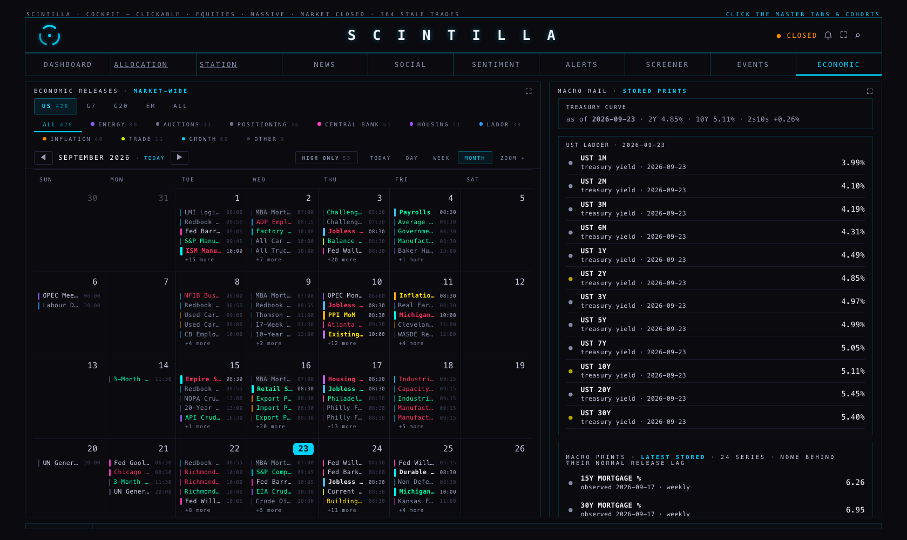
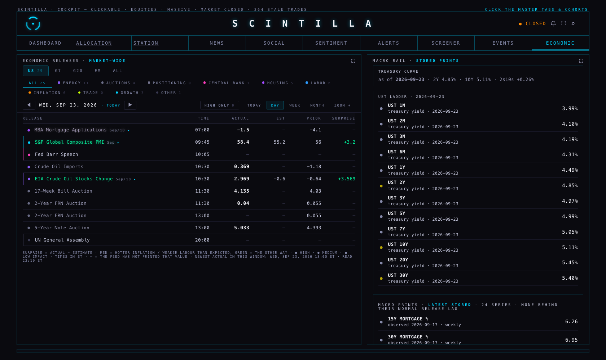
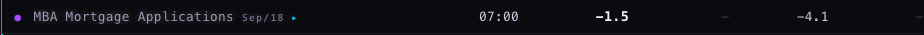
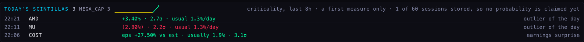
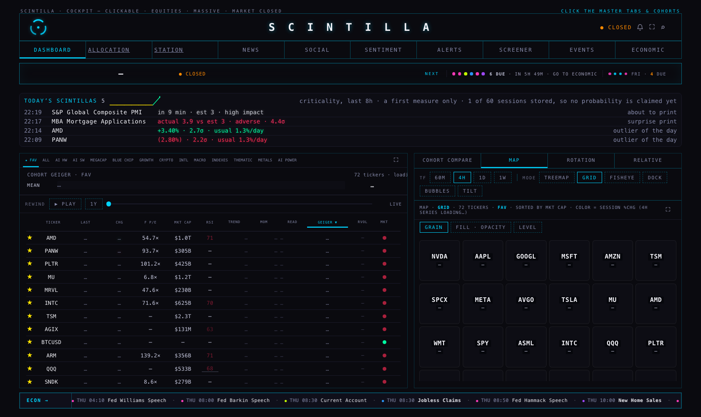
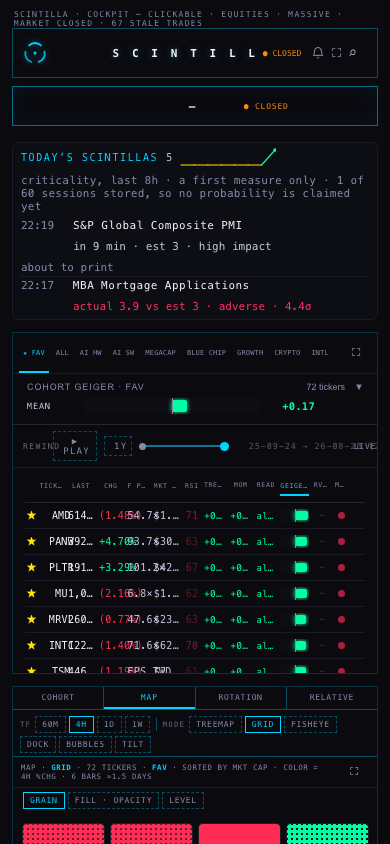

You said the dashboard was scintillating and telling you to go to economic — and then the Economic room did not scintillate at all. It does now. And a scintilla is no longer just a twinkle that exists while you are looking at it: every one of them is written down, with the number that made it one, so they can be counted, ranked, and pointed at.
A scintilla is something that moved further than its own history says it usually moves. Not "moved 2%". Two per cent is an enormous day for a utility and a quiet afternoon for a small miner, so a fixed percentage would fill your screen with the same twenty wild names every day and hide the ones that actually did something unusual.
So every scintilla carries one number: how many of its own standard deviations it moved. That is the σ (sigma) you see beside each line. Two sigma means "further than this name goes on about 95% of days". It is the same yardstick for a share price, an earnings surprise and an inflation print, which is what lets them sit in one list and be compared honestly.
Each one is stored as a row with: the time, the kind, the subject (a ticker, a release), the direction, the magnitude in sigma, the source it came from, and the inputs behind it — so any line on your screen can be recomputed by hand from what was saved.
| Kind | What makes one | Measured against |
|---|---|---|
| outlier of the day | today's move divided by the name's own daily volatility, 2σ or more | its own daily moves, from the chart API's daily bars (at least 20 days) |
| earnings surprise | EPS or revenue landed further from estimate than this company usually lands, 2σ or more | its own past surprises (at least 4 reports) |
| surprise print | a release came out further from consensus than that release usually does, 2σ or more | that same release's own past surprises (at least 4 prints) |
| about to print | a high or medium impact release inside the next 15 minutes, nothing published yet | nothing — it has no number yet, so it carries no sigma at all |
None of them invents a number. If a name has only eight days of history, or a company has only two past reports, or a release has never printed against a consensus before, there is no scintilla and the reason is recorded — short history, flat history, no estimate. A brand-new listing jumping 30% is not called a 10σ event on the strength of eight days. Two more kinds are reserved in the store and not built yet: sentiment spike and breadth thrust.
Tonight, running the detectors over the fixtures in their tests, that is exactly what happens: the same +3% day is a scintilla on a name that usually moves 1% and ordinary on one that usually moves 4%; a 30% EPS beat is a 3σ event for a company that normally lands within 2% and nothing at all for one that swings 30% every quarter; a CPI print 0.9 above consensus is 7.8σ against its own history of ±0.1 misses.
Everything glows through the one animation that was already on the board — 520 ms of colour and a soft shadow, nothing that moves a row. Four surfaces read the same stored rows:
A glow happens once per surface. Walking into the Economic room glows the row the dashboard pointed at — that was the whole complaint — and the room re-reading itself ten minutes later does not flash it at you again. After the glow fades the row keeps a faint mark, so you can still see which rows were the scintillas. If you have reduced motion switched on, the marks stay and nothing animates.



Measured inside the page rather than guessed. Sampling the release's own name as the glow ran:
| from the first sample | the name's colour | its halo |
|---|---|---|
| 0 ms | rgb(172, 135, 167) | rgba(213, 165, 176, 0.43) |
| 66 ms | rgb(162, 145, 175) | rgba(206, 184, 189, 0.41) |
| 132 ms | rgb(156, 152, 180) | rgba(201, 196, 197, 0.40) |
| 198 ms onward | rgb(154, 154, 182) | rgba(200, 200, 200, 0.40) |
That is the red of a hotter-than-expected print easing back to the row's own colour, and then holding the faint mark that says this row was a scintilla. Honest detail: the first sample lands part-way through the 520 ms, not at its very first frame — the page was still drawing the rest of the room when the glow started, so what the numbers prove is the easing and the landing, not the peak. The animation is colour and shadow only: no size, no weight, no border, so nothing on the page can move.



In the strip's header is a small line: how many scintillas happened each hour, weighted by how unusual they were (the sum of their sigmas, so one 8σ event does not read the same as four 2σ ones). Each segment is green where that hour's scintillas were mostly upward and red where they were mostly down. Beside it, the cohort doing the most of the scintillating today; hovering shows the top three. A name that belongs to two cohorts counts in both — the memberships overlap by design, and the hover says so.
It is a description of today, not a forecast. Nothing on that line has been tested against what happened next, and the header says so in words: "a first measure only · N of 60 sessions stored, so no probability is claimed yet". It needs about 60 trading sessions — three months of stored events — before a hit rate could be measured with any honesty, and more than that before it could be split by kind or by cohort. Right now the store holds one day.
| Number | Source |
|---|---|
| today's move, and the name's own volatility | the chart API's daily bars (/candles) — today's own forming bar is excluded from the history it is judged against |
| EPS and revenue, actual and estimate | earnings_events — the same table the earnings tape reads |
| actual, consensus and impact for a release | econ_calendar — the same table the Economic room reads |
| which way is the bad kind of surprise | the Economic room's own rule, taken letter for letter from the page, so a stored scintilla and the room can never disagree about which way is red |
| the stored scintillas themselves | public.scintillas, written only by the detector job; the Hub only reads it |